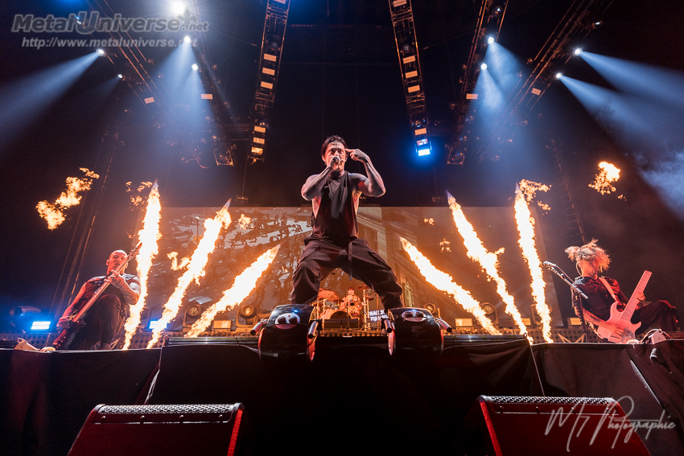

Falling in reverse
Groupe de metal moderne mêlant influences metalcore et rock alternatif, Falling In Reverse se distingue par son énergie et son approche musicale variée.

Groupe de metal moderne mêlant influences metalcore et rock alternatif, Falling In Reverse se distingue par son énergie et son approche musicale variée.

Groupe de deathcore connu pour ses atmosphères extrêmes et intenses, Lorna Shore propose un metal brutal aux ambiances sombres et puissantes.

Projet metal inspiré par l’histoire de la Première Guerre mondiale, Kanonenfieber combine black et death metal dans une approche sombre et immersive.

Groupe de deathcore reconnu pour sa violence sonore et son impact scénique, Slaughter To Prevail délivre un metal lourd et agressif.